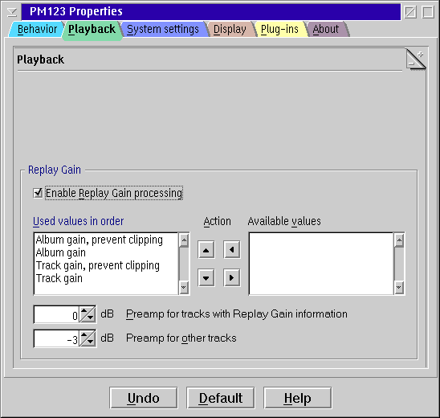

PM123's Playback Settings

Replay Gain
- Enable Replay Gain processing
- Turns on PM123's coverage of Replay
Gain tags (if supported by the source and the decoder).
- Used values in order
- List of replay gain tags. The first one that is available for a
song will be used.
You may change the order of the values with the up/down button and/or
add/remove some of them with the left/right arrow buttons or by
double-clicking.
- Preamp for tracks with Replay Gain information
- Additionally adjust the Replay Gain infos of the songs by this
factor. You might like values around +2 dB to get reasonable loudness.
- Preamp for other tracks
- Adjust the gain of songs without matching Replay Gain information
by this value. You might want to use negative values here to fight
against the loudness war.